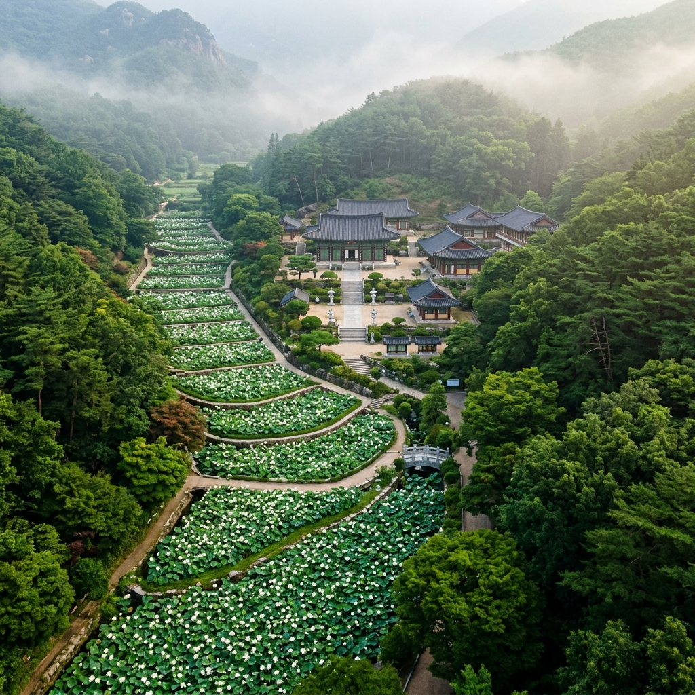
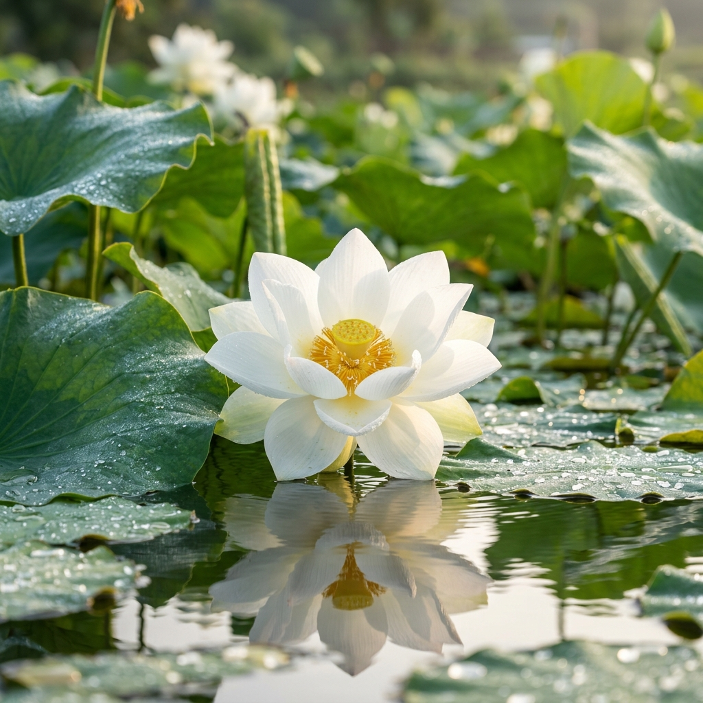
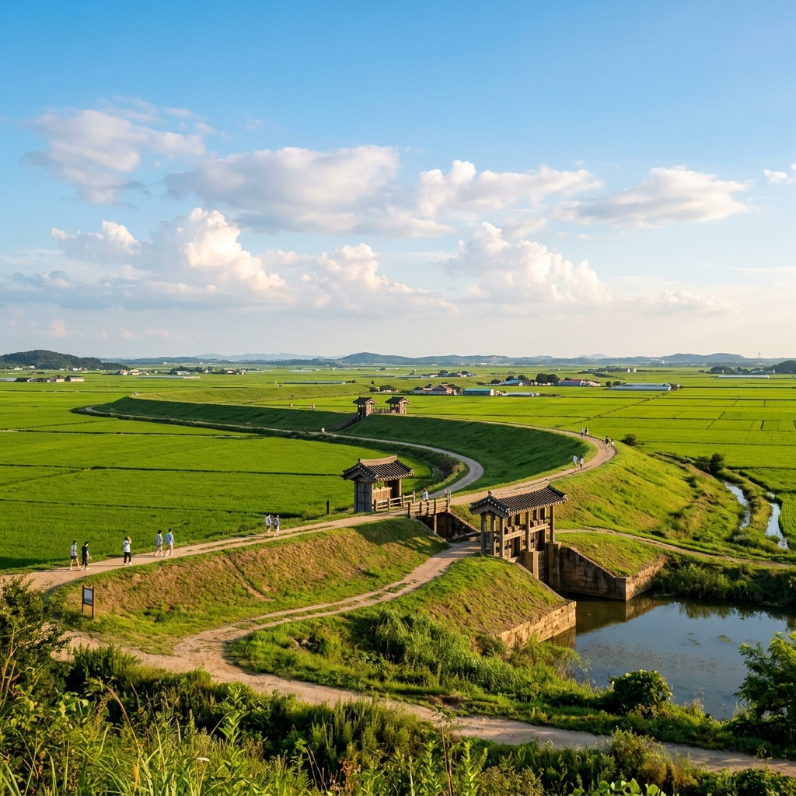

"하소(蝦沼)"라는 이름에는 특별한 유래가 있습니다.
위에서 내려다보면 연못의 형태가 마치 새우 한 마리가 알을 품은 모습을 닮았다고 해서 붙여진 이름입니다. 단순한 연꽃밭이 아니라 지형 자체가 이야기를 품고 있는 곳입니다.
청운사는 전라북도 김제시 청하면에 자리한 아담한 불교 사찰입니다. 전국적으로 유명한 대찰은 아니지만, 사찰 앞으로 층층이 이어지는 계단식 백련 연못이 알려지면서 여름마다 연꽃을 보러 오는 방문객이 늘고 있습니다.
이곳의 가장 큰 매력은 순수 백련(白蓮)만 심겨 있다는 점입니다.
대부분의 연꽃 명소는 홍련과 백련이 섞여 화려한 색감을 자랑하지만, 하소백련지는 오로지 흰 꽃만 피어납니다. 색이 절제된 만큼 오히려 고요하고 순결한 분위기가 더욱 진하게 느껴집니다. 어느 방향에서 바라봐도 사진 필터가 필요 없을 만큼 맑고 담백한 풍경이 펼쳐집니다.
계단식 지형 덕분에 아래쪽 연못에서 위쪽 연못을 올려다보면 층층이 쌓인 흰 꽃들이 자연스럽게 원근감을 만들어냅니다. 같은 공간이라도 아래에서 올려다보는 앵글과, 높은 곳에서 내려다보는 앵글이 전혀 다른 사진을 선사하는 것이 이곳의 묘미입니다.
백련의 개화는 일반적으로 7월 초에 시작해 8월 초까지 이어집니다.
하소백련지의 절정 시기는 보통 7월 중하순으로, 이 시기에 방문하면 군락 전체가 꽃으로 가득 찬 장관을 볼 수 있습니다. 이른 시기에 방문하면 아직 꽃이 적고 잎이 무성한 풍경이 주를 이루며, 너무 늦게 오면 꽃이 지고 씨방만 남은 모습을 보게 됩니다.
연꽃의 개화 시기는 해마다 기온과 강수량에 따라 달라집니다.
장마가 길거나 기온이 낮은 해에는 개화가 늦어질 수 있고, 이상 고온이 이어진 해에는 예상보다 일찍 절정을 맞이하기도 합니다. 때문에 정확한 개화 상황은 방문 전 청운사 또는 김제시 관광 정보 채널을 통해 직접 확인하는 것이 가장 확실합니다.
연꽃은 오전 중에 꽃잎이 열리고 오후가 되면 서서히 오므라드는 특성이 있습니다. 활짝 핀 백련을 보려면 오전 9시~12시 사이를 노리는 것이 최선입니다. 이른 아침이라면 이슬이 맺힌 꽃잎과 낮게 깔린 산안개가 함께 어우러지는 신비로운 풍경도 감상할 수 있습니다.

청운사의 주소는 전북특별자치도 김제시 청하면 청공로 185-55입니다.
자가용을 이용하는 경우 내비게이션에 "청운사(김제)" 또는 "하소백련지"를 검색하면 안내를 받을 수 있습니다. 수도권에서 출발한다면 서해안고속도로를 이용해 동군산 IC 방향으로 접근하거나, 호남고속도로를 타고 내려오는 두 가지 루트가 있습니다. 전주에서 출발하면 차로 약 20~30분이면 도착할 수 있어 전주와 연계한 당일치기 코스로도 좋습니다.
대중교통을 이용하신다면 KTX 김제역 또는 전주역에서 내린 후 김제 시내버스나 콜택시를 이용하는 것이 현실적인 방법입니다.
청운사까지 직접 연결되는 버스 노선은 제한적이므로 이동 전 김제시 버스 정보 채널을 통해 미리 확인하고 출발하시길 권합니다. 여름 연꽃 시즌에는 주차 공간이 붐빌 수 있으니 가능하면 오전 9시 이전에 도착하는 것이 여유롭게 즐기는 방법입니다.
하소백련지는 계단식 논밭처럼 층층이 구성된 독특한 공간입니다.
아래쪽 연못에서 위쪽 연못으로 이어지는 산책 동선이 자연스럽게 형성되어 있어, 각 층에서 조금씩 다른 각도로 백련을 감상할 수 있습니다. 아래쪽 넓은 연못은 수면에 가득 찬 연잎들 사이로 하얀 꽃이 점점이 피어난 풍경이 이곳의 대표 장면입니다.
위로 올라갈수록 규모는 작아지지만 꽃의 밀도가 높아져 오히려 꽉 찬 느낌을 줍니다.
각 층의 연못 사이를 연결하는 좁은 둑길을 걷다 보면 백련이 코 앞에서 피어 있는 장면을 만나게 됩니다. 연꽃 향기는 홍련보다 은은하지만, 한여름 새벽과 아침 시간에는 공기 중에 은은하게 퍼집니다.
사찰 경내 입구 앞에도 소규모 연못이 조성되어 있어 사찰 건물과 백련이 함께 담기는 앵글을 찾을 수 있습니다. 천천히 둘러봐도 1~2시간이면 충분하지만, 사진 촬영에 집중한다면 반나절도 부족하지 않습니다.
청운사는 규모가 크지 않은 작은 사찰이지만, 단정하고 조용한 분위기가 인상적입니다.
연꽃 시즌이 아닌 평소에도 참선이나 기도를 위해 찾는 신도들이 꾸준히 방문하는 곳입니다. 경내에는 대웅전을 비롯한 전각들이 배치되어 있으며, 여름이면 전각 처마 아래와 석등 주변에 핀 연꽃과 어우러져 사찰 특유의 정취가 더욱 깊어집니다.
법당 앞에 놓인 연등이 연꽃밭과 함께 어우러질 때면 별도의 포토존이 필요 없습니다.
외부 방문객도 사찰 예절을 지키며 관람할 수 있습니다. 방문 시에는 조용히 걷고, 사진 촬영 시 플래시를 자제하는 것이 예의입니다. 스님들이 생활하는 공간이니만큼 소란을 피하고, 경내에서 음식물을 섭취하는 것도 자제하는 것이 좋습니다.
사찰 주변 작은 화단에는 백련 외에도 다양한 야생화가 심겨 있어, 연꽃뿐 아니라 작은 꽃들을 찾아가는 재미도 있습니다.
백련 사진의 황금 시간대는 오전 6~9시입니다.
해가 낮게 떠 있을 때 역광이나 측광으로 빛이 들어오면 꽃잎이 반투명하게 빛나는 효과를 연출할 수 있습니다. 이 시간대에 촬영한 사진은 따로 보정하지 않아도 밝고 맑은 느낌이 자연스럽게 나옵니다.
구도는 로우앵글(낮은 자세)과 버드아이 두 가지를 모두 시도해 보세요.
낮게 자세를 낮춰 찍으면 연꽃이 하늘을 배경으로 우뚝 서 있는 강렬한 구도가 나옵니다. 반대로 높은 곳에서 내려다보면 연잎이 촘촘히 채운 수면의 패턴을 강조한 추상적인 구도가 연출됩니다.
백련은 새하얀 꽃잎 때문에 노출 과다가 나오기 쉽습니다. 스마트폰이든 카메라든 노출 보정을 -0.5~-1.0 정도로 낮게 잡으면 꽃잎의 결과 디테일이 살아납니다. 이슬이 맺힌 아침 연꽃은 접사로 찍을수록 탄성이 나오는 피사체입니다. 스마트폰의 포트레이트 모드를 활용하면 꽃에 자연스러운 아웃포커싱 효과를 줄 수 있습니다.
청운사 주변은 상권이 크게 발달하지 않은 조용한 농촌 지역입니다.
식사는 차로 10~20분 거리의 김제 시내에서 해결하는 것이 편리합니다. 김제는 쌀의 고장답게 밥상이 풍성합니다. 시내에는 한정식집과 국밥집이 고루 있으며, 1인당 1만~2만 원대로 든든하게 한 끼 해결할 수 있습니다.
지역 특산물인 쌀을 활용한 솥밥 정식이나 된장국 위주의 소박한 밥상이 인기입니다.
음료나 간식은 김제 시내 편의점이나 카페에서 미리 챙겨가는 것이 좋습니다. 현장에서 별도로 구매할 수 있는 시설이 제한적이므로, 여름철에는 얼음 음료와 간식을 충분히 준비해 가시길 권합니다. 외부 음식물 반입이 가능한지도 미리 확인하세요.

청운사에서 자동차로 약 15~20분 거리에 벽골제가 있습니다.
벽골제는 우리나라에서 현존하는 가장 오래된 저수지 제방으로, 삼국시대 백제 비류왕 대(330년경)에 처음 축조된 것으로 알려진 역사적 유적입니다. 당시 이 일대 드넓은 평야에 농업용 물을 공급하기 위해 쌓은 대규모 제방으로, 조선시대까지 증축과 보수를 거치며 사용됐습니다.
오늘날 벽골제 유적지에는 당시 수문 역할을 했던 장생거, 중심거, 경장거 등의 제방 유구와 함께 조각공원, 농경유물전시관이 조성되어 있습니다.
여름에는 유적지 내 연지(연꽃 못)에도 연꽃이 피어나 청운사와 연계한 연꽃 탐방 코스가 완성됩니다. 제방 위 산책로를 따라 걷다 보면 시원한 바람과 함께 드넓은 들판 전망을 즐길 수 있습니다. 역사 유적 관람과 더불어 여름 더위를 식히는 데에도 안성맞춤인 장소입니다.
입장 여부 및 요금은 방문 시점에 따라 달라질 수 있으니 김제시 공식 관광 채널에서 사전 확인을 권장합니다.
김제는 대한민국에서 지평선을 볼 수 있는 몇 안 되는 지역 중 하나입니다.
동쪽으로는 모악산이 솟아 있지만, 서쪽으로는 지평선이 끝없이 이어지는 드넓은 들판이 펼쳐집니다. 6~7월에는 이제 막 자란 초록 벼가 물결치듯 이어져 드라이브를 즐기기 좋은 계절입니다.
김제 시내에서 서쪽 방향으로 이어지는 지방도를 따라가면 드넓은 지평선 들녘을 감상할 수 있습니다.
도로 가장자리에 차를 세우고 창문을 열면 벼 향기와 여름 바람이 함께 밀려들어옵니다. 가을(9~10월)에는 황금 들판이 장관을 이루지만, 여름 초록 들녘 역시 청량감이 남다릅니다. 드라이브를 하다 보면 자연스럽게 속도가 느려지고 차 안이 조용해질 만큼 광활한 풍경이 인상적입니다.
김제는 매년 10월 지평선 축제를 개최합니다. 여름에 미리 방문해 지평선의 초록빛을 경험하면, 가을에 황금빛 지평선을 보러 다시 찾고 싶어지게 됩니다.
백련 여행의 필수 준비물은 모자, 자외선 차단제, 충분한 얼음 음료입니다.
연꽃밭 주변은 햇빛을 막아줄 나무 그늘이 없는 경우가 많아 여름 한낮에는 체감온도가 매우 높습니다. 오전 일찍 방문해 사진을 찍고, 한낮에는 벽골제 실내 전시관이나 김제 시내에서 점심을 즐기는 것이 현명한 시간 배분입니다.
청운사 하소백련지의 입장 여부와 요금은 방문 시점에 따라 달라질 수 있으므로, 사전에 청운사 또는 김제시 관광 정보 채널에서 확인하시길 권장합니다.
연꽃 시즌 중에는 지역 행사나 사찰 법회 일정과 겹칠 수 있습니다. 사전에 방문 가능 여부를 체크해 두는 것이 좋습니다. 여름 백련밭 주변에는 벌이나 잠자리 같은 곤충이 많습니다. 예민하신 분들은 긴 소매와 긴 바지를 착용하는 것도 방법입니다.
마지막으로, 연꽃은 꽃이 피는 시간이 정해져 있으므로 오전과 오후의 풍경이 전혀 다릅니다. 여유가 된다면 오전과 해 질 무렵을 모두 경험해 보세요. 각각 다른 매력이 있는 공간입니다.